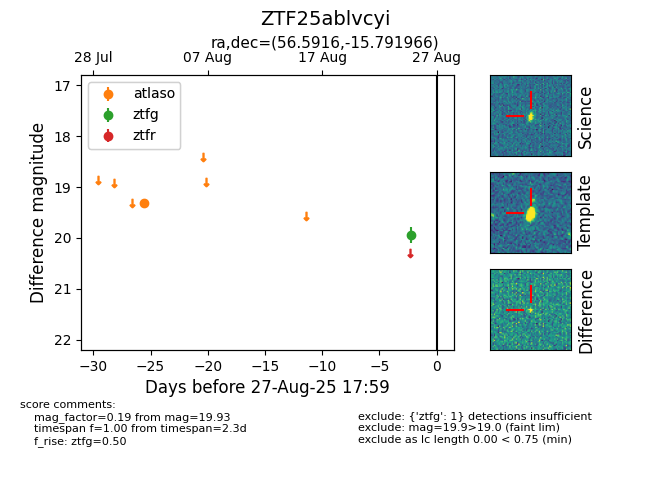

Target ZTF25ablvcyi at 2025-08-27 17:59, see:
FINK: fink-portal.org/ZTF25ablvcyi
Lasair: lasair-ztf.lsst.ac.uk/objects/ZTF25ablvcyi
ALeRCE: alerce.online/object/ZTF25ablvcyi
alt names
ZTF25ablvcyi (ztf,fink)
coordinates:
equatorial (ra, dec) = (56.5916,-15.79197)
galactic (l, b) = (206.5124,-47.97981)
photometry
last atlaso=19.31, ztfg=19.93
1 atlaso, 1 ztfg detections
